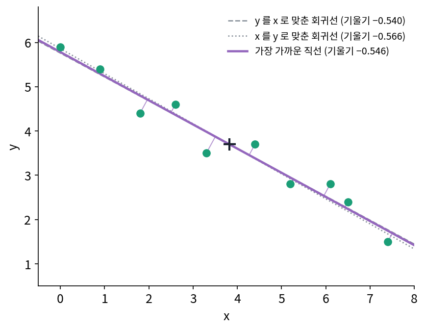
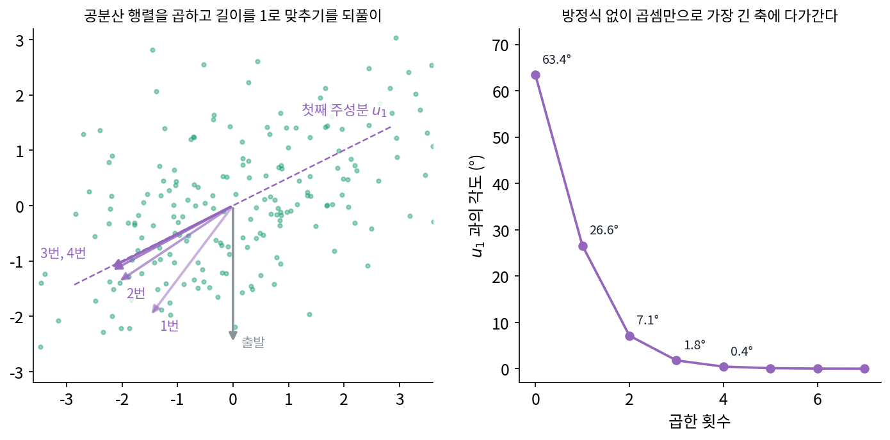
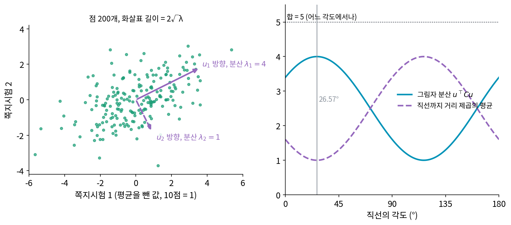
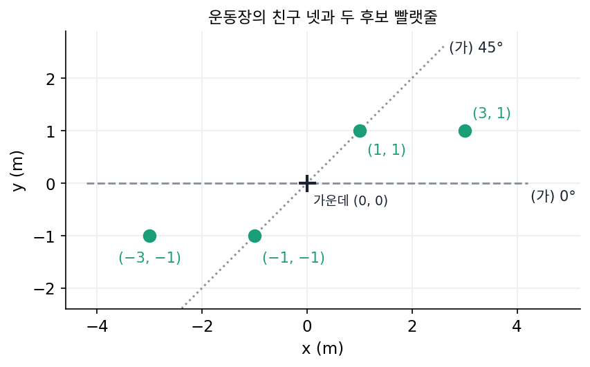
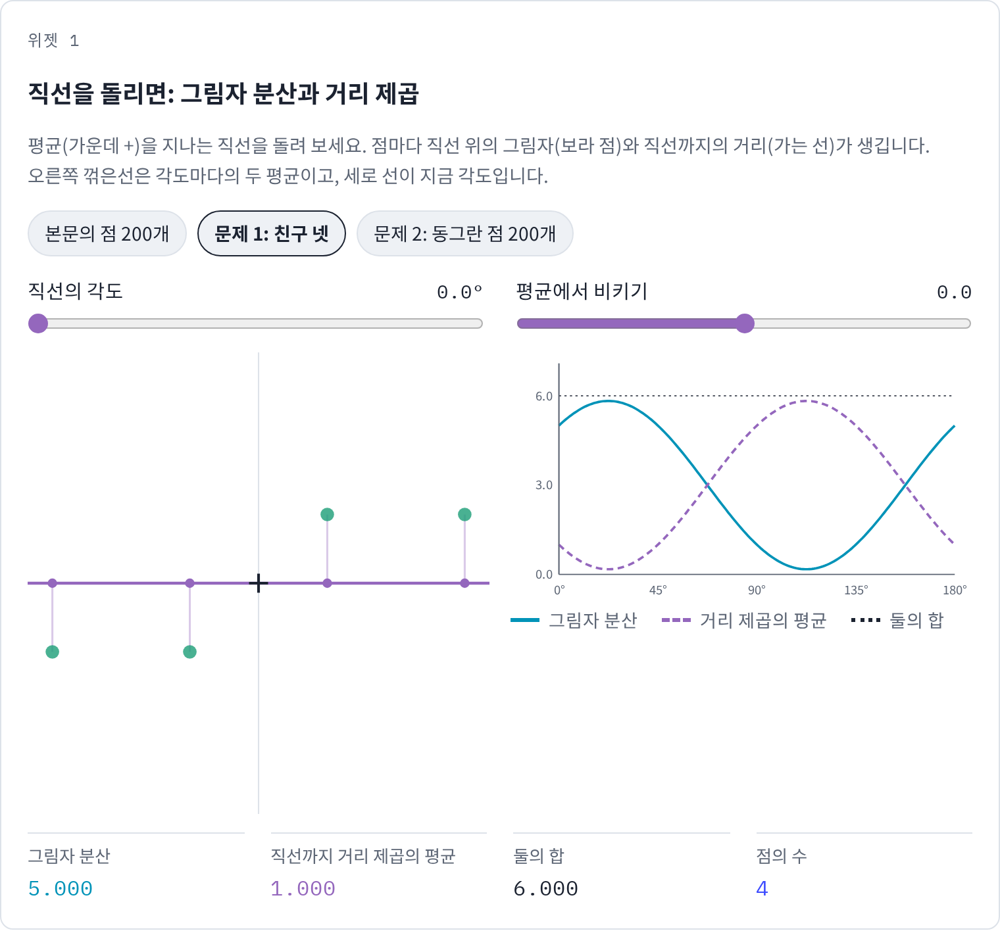
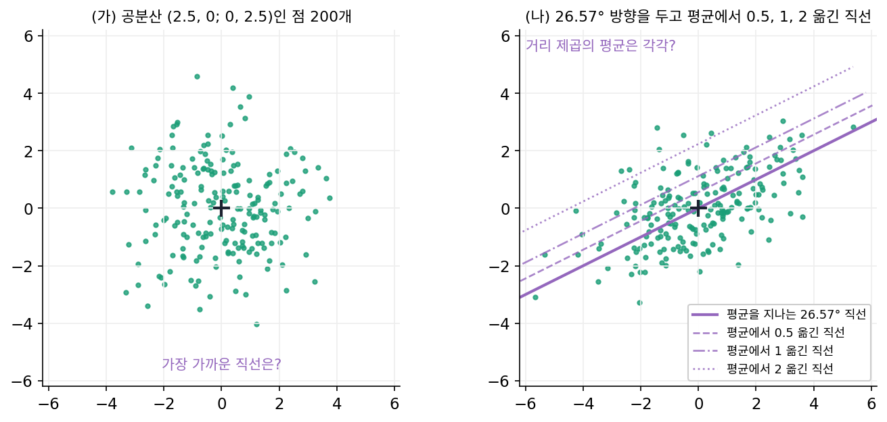
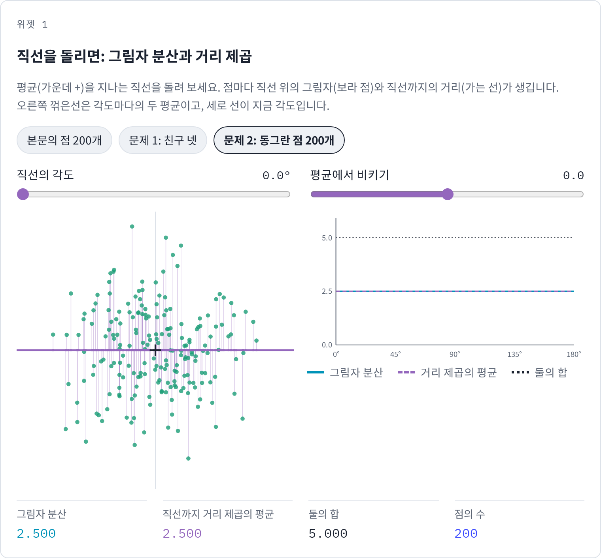
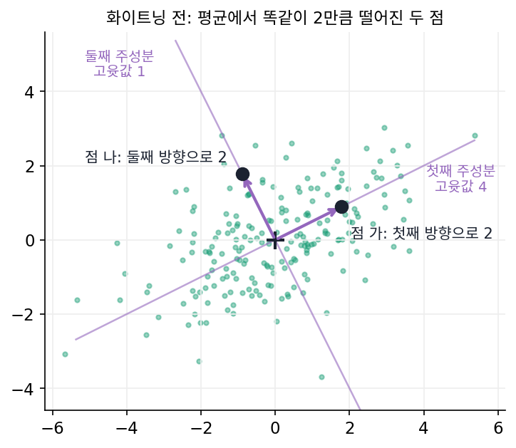

주성분 분석과 저랭크 근사
이 장의 물음
짧게 적는 일을 공평하게 비교하려면 자료를 적는 비트에 모델을 적는 비트까지 더해야 한다. 모델을 적는 비트와 그 모델로 자료를 적는 비트를 더한 이 셈을 두 부분 코드라 하는데, 그러면 남는 물음은 어떤 모델이 짧은 모델이냐다. 숫자 몇 개로 적을 수 있는 가장 단순한 규칙은 「점들이 거의 평평한 면 위에 있다」는 것이다. 키와 다리 길이처럼 함께 커지고 작아지는 두 값이라면 직선 하나와 그 위의 자리 하나로 점마다 숫자 하나씩만 적으면 된다.
ML을 공부하다 보면 이 생각을 여러 이름으로 만난다. 임베딩 수백 차원을 2차원에 뿌려 그린 그림, scikit-learn 의 PCA(n_components=0.95), 큰 언어 모델을 파인튜닝하는 LoRA, 추천 시스템의 사용자 벡터와 상품 벡터가 그렇다. 모두 「자료가 사실은 낮은 차원의 평평한 면 근처에 있다」는 가정 위에 서 있다. 그런데 그 면은 누가 어떻게 고르는가?
- 점 구름에 직선 하나를 맞출 때, 점에 가장 가까운 직선과 점이 가장 넓게 퍼진 방향은 같은 직선일까?
- 직선 하나가 아니라 축 k개로 이루어진 면이 필요하면, 가장 좋은 면을 한꺼번에 찾을 수 있을까? 그 면은 특잇값 분해와 어떤 사이일까?
- 축을 많이 남길수록 학습 자료는 더 잘 되살아난다. 그렇다면 몇 개에서 멈춰야 할까?
- 칸의 대부분이 비어 있는 표에서도 낮은 차원이라는 가정으로 빈칸을 채울 수 있을까?
주성분: 가장 가까운 직선은 가장 넓게 퍼진 방향
학생 200명이 쪽지시험 두 번을 보았는데, 두 점수는 함께 오르내려서 첫 시험을 잘 본 학생은 둘째 시험도 대개 잘 본다. 학생마다 점수 둘을 적는 대신 「종합 실력」 하나만 적어 두고 싶다면, 평면 위 점 200개를 직선 하나 위의 자리로 바꾸면 된다. 그런데 어느 직선을 골라야 할까? 떠오르는 기준 두 가지 가운데 하나는 점들에 가장 가까운 직선으로, 직선 위의 자리만 적으면 직선까지의 거리만큼은 잃어버리므로 잃는 것이 가장 적은 직선을 고르자는 것이다. 다른 하나는 직선 위에 그림자를 떨어뜨렸을 때 그림자가 가장 넓게 퍼지는 직선으로, 학생들을 가장 잘 구별해 주는 방향을 고르자는 것이다. 두 기준은 서로 다른 직선을 고를까?
역사: 두 가지 물음, 같은 답
1901년 칼 피어슨(Karl Pearson)은 『철학 잡지(Philosophical Magazine)』에 「공간의 점들에 가장 가깝게 맞는 직선과 평면에 대하여(On Lines and Planes of Closest Fit to Systems of Points in Space)」를 실었다. 그는 최소제곱법 교과서가 한 변수를 「독립 변수」로 정해 놓고 다른 변수를 맞춘다는 데서 출발했다. 키로 다리 길이를 맞춘 직선과 다리 길이로 키를 맞춘 직선은 다르지만, 피어슨은 이것이 모순은 아니라고 적었다. 키가 주어졌을 때 가장 그럴듯한 다리 길이와 다리 길이가 주어졌을 때 가장 그럴듯한 키는 원래 다른 물음이기 때문이다. 하지만 피어슨이 적은 대로 물리학과 생물학의 많은 경우에는 두 값을 모두 실험이나 관찰로 재므로 두 값 모두에 오차가 있고, 그러면 어느 쪽도 독립 변수라 할 수 없다. 그래서 그는 세로 거리도 가로 거리도 아닌, 점에서 직선까지의 수직 거리를 제곱해 더한 값이 가장 작은 직선을 「가장 잘 맞는 직선」으로 삼았다. 그리고 이 직선이 점들의 무게중심을 지나고, 점 구름이 만드는 타원체의 가장 긴 축 방향을 따른다는 것을 보였다. 논문 끝의 수치 예에는 점 열 개가 있다.

32년 뒤 같은 답에 다른 길로 닿은 사람이 해럴드 호텔링(Harold Hotelling)이다. 1931년 미국에서는 손다이크(E. L. Thorndike)를 위원장으로 「단일 특성 위원회(Unitary Traits Committee)」가 꾸려졌다. 여러 심리 검사 점수 밑에 깔린 몇 개의 독립된 정신 능력을 찾자는 모임이었다. 위원이던 켈리(Truman L. Kelley)는 1928년 책에서 던진 물음, 곧 검사 A, B, C의 점수로부터 서로 독립인 정신 특성이 무엇인지 알아내는 일을 수학자 호텔링에게 맡겼다. 1932년 6월 호텔링은 켈리에게 보낸 편지에 「점수 산점도가 그리는 타원체의 주축에 해당하는 검사 점수의 일차 결합을 독립 요인으로 삼자」는 생각을 적었고, 그해 여름 두 달 동안 800달러를 받고 위원회 일을 했다. 결과는 1933년 『교육 심리학 저널(Journal of Educational Psychology)』에 두 번에 나뉘어 실린 「통계 변수들의 묶음을 주성분으로 분해하기(Analysis of a Complex of Statistical Variables into Principal Components)」다. 호텔링은 계산을 짧게 하려고, 행렬을 벡터에 거듭 곱해 가장 긴 축을 찾고 그 축을 빼낸 뒤 다음 축을 찾는 되풀이 방법도 함께 냈다. 피어슨은 「점에 가장 가까운 면」이라는 기하의 물음에서, 호텔링은 「점수의 분산을 가장 많이 설명하는 결합」이라는 통계의 물음에서 출발했다. (호텔링이 위원회 일을 맡게 된 경위와 편지는 휴버트(Lawrence Hubert)가 2016년 하버드·컬럼비아의 기록 보관소 자료로 정리한 글 「Whence Principal Components?」에 따랐다.)


피어슨의 점 열 개면 지금은 np.linalg.eigh 한 줄이에요. 호텔링이 계산을 줄이는 되풀이 방법까지 따로 낸 게 좀 의외예요.

검사가 세 개면 공분산 행렬이 3 × 3이에요. 고윳값을 손으로 구하려면 무엇을 풀어야 할까요?

음, 2 × 2일 때는 이차방정식이었으니까… 3 × 3이면 삼차방정식이요. 검사가 열 개면 십차방정식이네요.

5차 방정식부터는 일반적인 근의 공식이 없어요. 호텔링의 방법은 행렬을 벡터에 곱하는 일만 되풀이하니까, 방정식을 풀지 않고 곱셈과 덧셈만으로 가장 긴 축에 다가가요. 계산을 손으로 하던 때에 맞춘 방법이죠.

저는 그 곱셈을 한 번도 손으로 해 본 적이 없네요. 라이브러리가 다 해 주니까요.

그런데 피어슨은 점에 가장 가까운 직선을, 호텔링은 분산을 가장 많이 설명하는 결합을 찾았잖아요. 물음이 다른데 같은 축이 나온 건 우연이에요?
점 200개에 직선 맞추기
두 기준을 직접 비교해 보자. 학생 200명의 두 쪽지시험 점수에서 각각 평균을 빼고 10점을 1로 센 값을 점으로 찍었다(실제 학생의 점수가 아니라 스크립트로 만든 자료다). 점 구름은 오른쪽 위로 기운 타원 모양이다. 평균을 지나는 직선을 0°부터 돌려 가며, 직선 위 그림자의 분산과 직선까지 거리 제곱의 평균을 재면 아래 표가 나온다.
| 직선의 각도 | 그림자의 분산 | 직선까지 거리 제곱의 평균 | 둘의 합 |
|---|---|---|---|
| 0° (가로축) | 3.400 | 1.600 | 5.000 |
| 26.57° | 4.000 | 1.000 | 5.000 |
| 45° | 3.700 | 1.300 | 5.000 |
| 90° (세로축) | 1.600 | 3.400 | 5.000 |
| 135° | 1.300 | 3.700 | 5.000 |
합이 왜 늘 5.000인지는 점 하나에서 이미 보인다. 평균에서 점까지 그은 선분, 그 점의 그림자까지의 선분, 점에서 직선까지 내린 수선은 직각삼각형을 이룬다. 피타고라스 정리로 (평균까지 거리)² = (그림자의 자리)² + (직선까지 거리)²이다. 예를 들어 첫째 학생의 점 (0.421, −0.034)은 평균까지 거리 제곱이 0.179이고, 26.57° 직선에 대해 그림자 쪽이 0.131, 직선까지 거리 쪽이 0.048이다. 피타고라스 등식을 200명에 대해 평균 내면 왼쪽은 직선과 상관없는 값(두 시험의 분산의 합 5)이고, 오른쪽은 그림자의 분산과 거리 제곱의 평균이다. 합이 고정되어 있으니 한쪽을 가장 크게 하는 직선이 곧 다른 쪽을 가장 작게 하는 직선이다. 피어슨의 기준과 호텔링의 기준은 처음부터 같은 직선을 고를 수밖에 없었다.
그 직선을 각도를 훑지 않고 바로 찾을 수도 있다. 두 시험이 함께 커지고 작아지는 정도를 모은 표, 곧 공분산 행렬 C가 이 자료에서는 첫째 줄 (3.4, 1.2), 둘째 줄 (1.2, 1.6)이다. 3.4와 1.6은 두 시험의 분산이고 1.2는 둘의 공분산이며, 이 행렬이 있으면 길이 1인 방향 u 쪽 그림자의 분산을 uᵀCu로 계산할 수 있다. 그림자의 분산이 가장 커지는 방향은 Cu가 u와 같은 방향이 되는 곳, 곧 C의 고유벡터다. 2 × 2 행렬이면 손으로 풀린다. 대칭 행렬 (a, b; b, c)의 고윳값은 (a + c)/2 ± √(((a − c)/2)² + b²)이므로 2.5 ± √(0.9² + 1.2²) = 2.5 ± 1.5, 곧 4와 1이다. 고윳값 4의 고유벡터는 (3.4 − 4)u₁ + 1.2u₂ = 0에서 u₂ = u₁/2, 길이를 1로 맞추면 (2, 1)/√5 = (0.894, 0.447)이고 각도는 26.57°다. 표에서 그림자의 분산이 가장 컸던 각도이고, 그때의 분산이 바로 고윳값 4이며, 남은 고윳값 1은 그 직선까지 거리 제곱의 평균과 같다.

이렇게 공분산 행렬의 고유벡터를 고윳값이 큰 순서로 늘어놓은 방향을 주성분 (가장 넓게 퍼진 방향 / principal component)이라 하고, 자료를 이 방향들로 다시 적는 일을 주성분 분석(PCA)이라 한다. 첫째 주성분 방향의 직선은 점에 가장 가까운 직선이고, 둘째 주성분은 첫째와 직각인 방향 가운데 가장 넓게 퍼진 방향이다.
ML에서: 임베딩을 2차원에 그리기
BERT-base 같은 언어 모델이 내는 768차원 문장 임베딩을 종이에 그리려면 2차원으로 줄여야 한다. 가장 흔한 방법이 첫째와 둘째 주성분 위의 그림자를 그리는 것이다. 위의 등식대로 이 그림은 점들의 분산을 가장 많이 남기는 평면이지만, 버린 766개 방향에 남은 분산이 얼마인지는 그림에 나오지 않으므로, 그림 옆에 「두 축이 분산의 몇 %를 담았나」를 함께 적는 것이 좋다. 주성분 축으로 돌린 뒤 축마다 크기를 맞추는 화이트닝도 같은 계산에서 나온다. 수(Jianlin Su) 외의 「Whitening Sentence Representations for Better Semantics and Faster Retrieval」(2021)은 BERT의 문장 임베딩에 이 화이트닝을 해 주는 것만으로 문장 유사도 성적이 오르고, 그때 앞쪽 축만 남기면 벡터도 짧아진다고 보고했다. 화이트닝이 점 구름을 어떻게 바꾸는지는 아래 문제 3에서 손으로 해 본다.
문제 1. 빨랫줄과 친구 넷
운동장에 친구 넷이 좌표 (3, 1), (1, 1), (−1, −1), (−3, −1)에 서 있다(단위 m). 넷의 가운데 (0, 0)을 지나게 빨랫줄을 하나 치려 한다. (가) 빨랫줄을 가로(0°)로 칠 때와 45°로 칠 때, 친구들에서 빨랫줄까지 거리 제곱의 평균은 각각 얼마인가? (나) 친구들이 서 있는 모양을 보면 45°가 더 가까울 것 같다. 정말 그런가? (다) 가장 가까운 빨랫줄의 각도와 그때의 거리 제곱 평균을 구하라. (위젯 1의 「문제 1: 친구 넷」으로 확인해 보자.)

점들이 대각선으로 서 있으니까 45°가 제일 가깝겠죠. 가로줄이면 넷 다 1 m씩 떨어져 있으니까 거리 제곱 평균이 1이고요.
45°도 직접 계산해 볼까요? 점 (3, 1)에서 45° 직선까지의 거리는요?
(x − y)/√2니까 2/√2 = 1.414, 제곱하면 2예요. (1, 1)은 직선 위니까 0, (−1, −1)도 0, (−3, −1)은 다시 2. 평균 1이에요. 가로줄이랑 똑같네요?
그림자 쪽으로 봐도 될 것 같아. 넷의 거리 제곱 합은 (9 + 1) + (1 + 1) + (1 + 1) + (9 + 1) = 24라서 평균이 6이야. 어느 빨랫줄이든 그림자 분산 + 거리 제곱 평균 = 6이고.
그럼 가로줄은?
가로줄의 그림자는 3, 1, −1, −3이니까 분산 5, 거리 쪽은 1. 45°의 그림자는 (x + y)/√2라서 2.83, 1.41, −1.41, −2.83이고 분산이 5니까, 거리 쪽은 또 1이야. 어느 쪽으로 재도 같네.
그럼 그 사이 어딘가가 더 나은 건가요?
공분산 행렬을 써 보면 알 수 있겠죠. 서연 학생, 칸을 채워 볼래요?
x의 분산 5, y의 분산 1, 공분산은 (3 + 1 + 1 + 3)/4 = 2예요.
그 행렬의 고윳값은요?
고윳값이 3 ± √(2² + 2²) = 3 ± 2.828이니까 5.828과 0.172.

그럼 거리 제곱 평균은 작은 쪽 0.172 m²예요? 1보다 훨씬 작네요.
그 직선의 각도는 어떻게 구할까요?

각도를 θ(세타)라 하면 tan 2θ = 2 × 2/(5 − 1) = 1에서 2θ = 45°, θ = 22.5°예요. 아, 0°와 45°가 똑같았던 건 22.5°를 사이에 두고 좌우로 똑같이 비껴서였네요.

눈대중으로 대각선이라고 생각했는데, 바깥 두 명이 가로로 멀리 서 있어서 줄이 가로 방향으로 끌려간 거네요. 조별 과제 평균 점수가 점수 높은 두 명 쪽으로 끌려가는 거랑 비슷해요.
위젯 1에서 문제 1 설정을 불러와 직선을 0°에서 45°까지 돌리며 거리 제곱의 평균이 어디서 가장 작아지는지 확인해 보세요.

문제 2. 모든 직선이 똑같이 좋은 자료
피어슨은 논문에서 이 방법이 실패하는 경우를 적어 두었다. (가) 공분산 행렬이 첫째 줄 (2.5, 0), 둘째 줄 (0, 2.5)인 점 200개(위젯 1의 「문제 2: 동그란 점 200개」)에서 가장 가까운 직선은 어느 것인가? (나) 본문의 점 200개에서 26.57° 방향을 그대로 두고 직선을 평균에서 수직으로 0.5, 1, 2만큼 옮기면 거리 제곱 평균은 각각 얼마가 되는가? (다) 「평균을 지나는 직선」이라는 조건은 왜 붙었는가?

(가)는 위젯에서 돌려 보니까 그림자 분산도 거리도 계속 2.500이에요. 어느 각도로 해도 똑같아요. 답이 없는 건가요?
답이 없는 걸까요, 답이 너무 많은 걸까요?
너무 많은 쪽 같아요. 공분산이 2.5 곱하기 단위행렬이면 어떤 u에 대해서도 uᵀCu = 2.5니까요.
그럼 고유벡터는 어느 방향을 골라야 하죠?

고윳값 둘이 같으면… 아무 방향이나 고유벡터예요. 하나로 정할 수가 없어요. 모든 직선이 다 가장 가까운 직선이고, 「실패」라는 건 답이 하나로 안 정해진다는 뜻이었네요.
그래요. 피어슨은 이 경우를 점들이 공처럼 고르게 퍼진 경우라고 적었어요. (나)는요?
위젯에서 「평균에서 비키기」를 0.5로 하면 거리 제곱 평균이 1.250, 1이면 2.000, 2면 5.000이에요. 원래는 1.000이었고요.
늘어난 양이 0.25, 1, 4라서 옮긴 거리의 제곱이야.
왜 꼭 옮긴 거리의 제곱만큼만 늘까요? 점 하나에서 옮긴 직선까지의 거리를 써 볼까요?
원래 거리에서 옮긴 거리를 뺀 값이요. 그걸 제곱해서 평균하면… 원래 거리를 평균하면 0이니까, 원래 거리의 제곱 평균에 옮긴 거리의 제곱만 더해져요.
그러니 방향을 어떻게 잡든 평균을 지나는 직선이 가장 가까워요. 피어슨이 「가장 잘 맞는 직선은 무게중심을 지난다」고 먼저 보인 다음에 방향을 구한 게 이 순서였구나.
그래서 PCA를 하기 전에 꼭 평균을 빼라고 하는 거군요. 평균을 안 빼고 돌리면 첫째 축이 그냥 원점에서 평균 쪽을 가리키는 방향이 돼 버리겠네요. 조교님이 숙제에서 평균 빼는 줄을 빼먹으면 감점한다고 했던 게 이거였어요.

문제 3. 화이트닝하면 주성분은 어디로 가나
본문의 점 200개(공분산 고윳값 4와 1, 첫째 주성분 (0.894, 0.447))를 화이트닝한다. 점마다 평균을 빼고, 주성분 축의 좌표 (z₁, z₂)로 바꾼 뒤, 축마다 √λ로 나눈다. (가) 화이트닝한 점들의 공분산 행렬은? (나) 화이트닝한 점들에서 가장 가까운 직선은? (다) 평균에서 첫째 주성분 방향으로 2만큼, 둘째 주성분 방향으로 2만큼 떨어진 두 점은 화이트닝 뒤 평균에서 각각 얼마나 떨어지는가? 화이트닝 뒤의 거리는 임베딩 사이의 거리를 잴 때 무슨 뜻인가?

축 좌표의 분산이 4와 1이니까 각각 2와 1로 나누면 분산이 1, 1이에요. 공분산은 원래 축끼리 0이었으니까 단위행렬이요.
그럼 (나)는 문제 2의 동그란 점 200개랑 같은 경우네. 모든 방향의 분산이 1이니까 모든 직선이 똑같이 가까워. 가장 넓게 퍼진 방향이 사라졌어.
(다)는요?
첫째 방향으로 2 떨어진 점은 2/2 = 1, 둘째 방향은 2/1 = 2요. 원래는 둘 다 2만큼 떨어져 있었는데 화이트닝 뒤에는 두 배 차이가 나요.
어느 쪽이 더 「드문」 점이었을까요?
둘째 방향이요. 그 방향은 원래 분산이 1밖에 안 돼서 2만큼 떨어진 건 두 표준편차짜리 일이에요.
첫째 방향은?

분산이 4라서 2는 한 표준편차야. 그러니까 화이트닝은 거리를 「그 방향에서 보통 얼마나 흩어지나」로 나눠 재는 거네. 통계 수업에서 배운 마할라노비스 거리랑 같아.

임베딩에서도 몇몇 방향으로만 크게 퍼져 있으면, 그냥 거리를 재면 그 방향 차이가 다 덮어 버리겠네요. 화이트닝하면 작게 퍼진 방향의 차이도 거리에 제대로 반영되고요. 문장 유사도가 좋아졌다는 게 그런 뜻이구나.